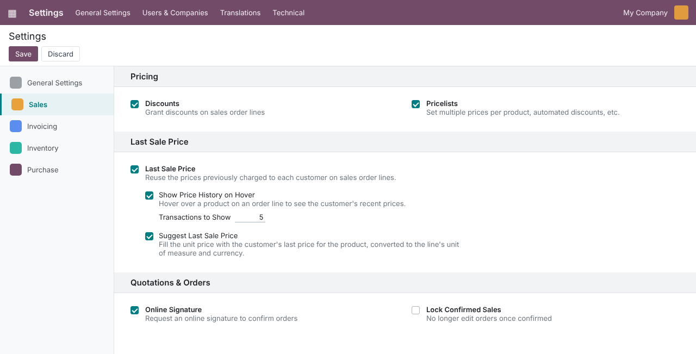
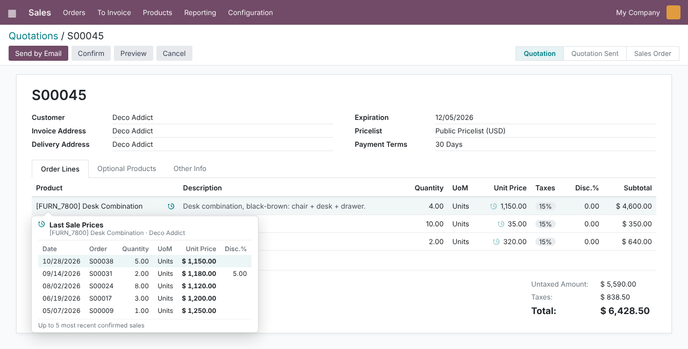
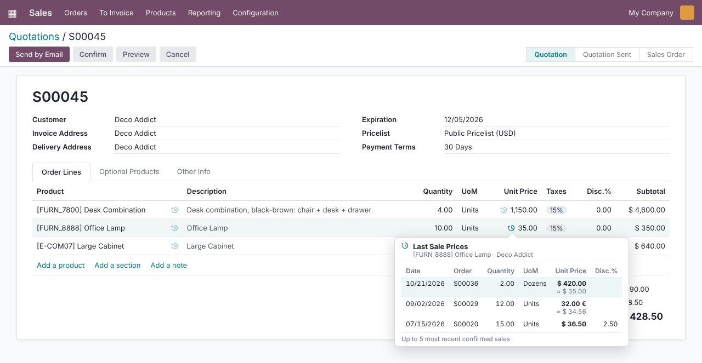
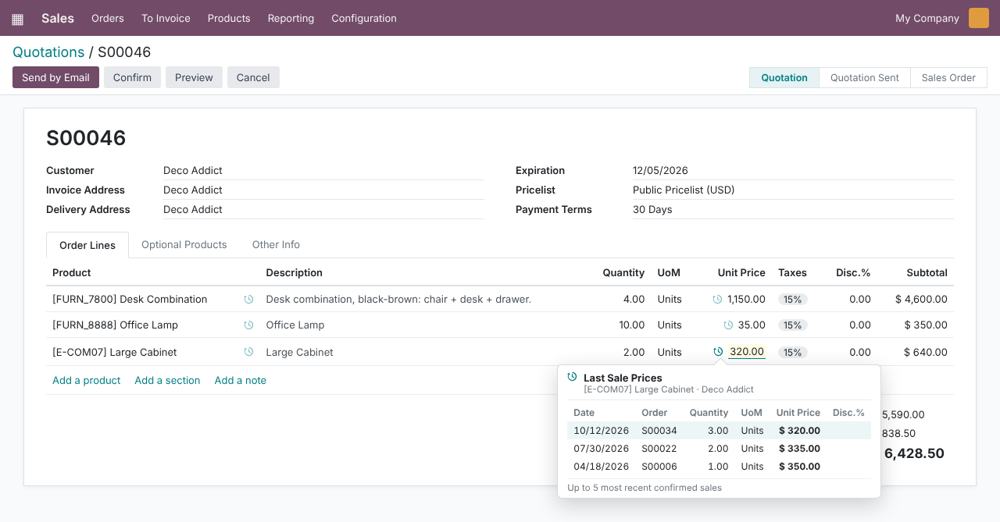
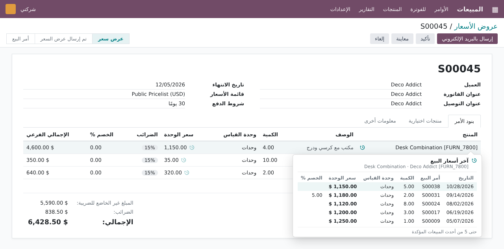

Sales · Pricing · Customer History
Hover Last Sale Price
See what each customer paid last time without leaving the quotation: hover the product or the small history icon beside the unit price. Optionally, new lines are pre-filled with the customer’s last price, converted to the line’s unit of measure and currency.
Odoo 16.0
Community & Enterprise
25 automated tests
English & Arabic (RTL)
Technical name: hover_last_sale_price
LGPL-3
2 hover points
The product name and a history icon beside the unit price
1–50 sales
You choose how many past transactions the card lists
2 conversions
Unit of measure and currency, applied before a price is reused
0 page reloads
Loaded in the background only when you hover
Why this module
Quoting a returning customer usually starts with the question “what did we charge them last time?”. Standard Odoo makes you leave the quotation to find out.
In standard Odoo 16
- The customer’s previous prices are not visible on the order line; you open other orders or a report in another tab.
- A new line always gets the pricelist price, even when the customer has an agreed price from past deals.
- Past sales in dozens or another currency must be converted by hand before you can compare them.
- Orders placed by a contact of the customer are easy to miss when you search by company.
- Drafts and cancelled quotations mix with real sales when you browse order history.
- Arabic users get a lookup flow that was never designed for right-to-left reading.
With this module
- Hover the product or the history icon beside Unit Price and the last sales appear right under the line.
- Suggest Last Sale Price fills the unit price of a new line with the customer’s latest price.
- Prices are converted to the line’s UoM and currency; the card shows the original and an “≈” converted value.
- History covers the whole commercial entity: the company and all its contacts.
- Only confirmed sales count; drafts, cancelled orders and the order you are editing are excluded.
- Full Arabic (ar_001) translation with a mirrored, RTL-safe card.
How it works
Four steps, no new menus to learn.
1
Enable
Tick Last Sale Price in Sales settings, then pick hover, suggestion, or both.
2
Quote
Create a quotation for a customer and add products as usual.
3
Hover
Rest the mouse on the product or the icon beside the unit price to see the last N sales.
4
Price with confidence
Keep the suggested price or adjust it, knowing exactly what the customer paid before.
Features
Screenshots use demo data: customer Deco Addict with earlier confirmed orders S00006–S00038 for [FURN_7800] Desk Combination, [FURN_8888] Office Lamp and [E-COM07] Large Cabinet, in USD with one past order in EUR.
Settings
One master switch, two independent options
Go to Sales › Configuration › Settings, section Last Sale Price. The master toggle is off by default. Once enabled, choose Show Price History on Hover (with Transactions to Show, 1 to 50, default 5) and/or Suggest Last Sale Price. Settings are stored per company; switching the master off disables both options at once.

Feature 1
Hover the product to see the customer’s last prices
On the Order Lines tab, rest the mouse on a product. The Last Sale Prices card lists Date, Order, Quantity, UoM, Unit Price and Disc.%, newest first, with the latest sale highlighted. It works on the standard product column and with the product configurator or variant grid installed.

Feature 2
A history icon beside every unit price, with converted values
A small history icon sits beside Unit Price. Only the icon opens the card, so editing the price is never obstructed. When a past sale used another unit of measure or currency, the card shows the original price and, underneath, the value ≈ converted to the current line.

Worked example: S00036 sold 2 Dozens at $ 420.00 per dozen → $ 420.00 ÷ 12 = $ 35.00 per unit. S00029 was sold at 32.00 € → converted with the company’s currency rate to $ 34.56.
Feature 3
New lines start from the customer’s last price
With Suggest Last Sale Price enabled, picking a product fills Unit Price with the customer’s most recent confirmed price, normalized to the line’s UoM and the order currency at the order date. Below, Large Cabinet is listed at $ 350.00 but the line starts at $ 320.00, the price of S00034. Changing the UoM re-applies the conversion; with no history, the pricelist price is used as usual.

Feature 4
Arabic translation and right-to-left layout
Every label, setting and tooltip ships in Arabic (ar_001). The card mirrors for right-to-left reading while amounts and quantities keep a left-to-right digit order. Dates, quantities and amounts are formatted on the server in the user’s language.

What counts as a past sale
The same rules feed the hover card and the suggestion.
Included Lines of Sales Order and Locked orders, quantity above zero, same product, same company
Whole customer Orders of the company and of any of its contacts (including archived ones)
Excluded Quotations, cancelled orders, section and note lines, and the order being edited
Skipped A sale in a UoM of another category (e.g. kg vs units) is never used for the suggestion
Order of the list: newest order date first, then newest order. The suggestion always takes the first entry, so it matches the highlighted row of the card.
Built for real-world corner cases
Each of these is covered by the code and, where it applies, by the automated tests.
Multi-company
Settings are per company and history only comes from the order’s company; companies the user is not allowed in return nothing.
Multi-currency
Past prices are converted to the order currency with the company’s rates at the order date.
Different units of measure
Dozens, packs or units of the same category are converted; incompatible categories are ignored.
Prices you type are kept
A price given explicitly (by you, an import or the API) is never overwritten; invoiced lines are never repriced.
Changing the customer
Existing lines are not silently repriced when the customer changes; the suggestion only fires on product, UoM or quantity changes.
Large order history
One indexed query with a limit; a dedicated database index on product, customer, company and state keeps it fast.
Fast mouse movements
The card waits for a short steady hover, results are cached for 30 seconds, and late answers are discarded.
Typing a product
The product card stays closed while you type in the product field, so it never hides the autocomplete.
Imports and integrations
Lines created through the API also get the suggestion; pass the context key lsp_skip_suggestion to opt out.
Security
No new groups. Access follows standard Sales rights.
| Who | Sees / can do |
|---|
| Sales users (any level) | The card for orders they can open, if they can read the customer and the product. History includes sales made by colleagues, so the whole team quotes from the same reference. |
| Sales Administrator | Enables the feature and its options in Sales › Configuration › Settings. |
| Multi-company | History only from the order’s company, and only for companies in the user’s allowed companies. |
Technical details
| Odoo version | 16.0, Community and Enterprise (module version 16.0.1.1.0) |
| Depends on | sale |
| Python dependency | None |
| Menus | No new menus; works inside Sales › Orders › Quotations / Orders |
| Settings | Sales › Configuration › Settings › Last Sale Price |
| Models extended | res.company, res.config.settings, sale.order, sale.order.line (no new tables) |
| Front end | OWL field widgets sol_product_many2one (extended) and lsp_price_unit, shared hover hook, popover service |
| Automated tests | 25 TransactionCase tests: settings and limits, date ordering, N limit, exclusions, contacts, company isolation, UoM and currency normalization, suggestion triggers and fallbacks |
| Languages | English, Arabic (ar_001) |
| License | LGPL-3 |